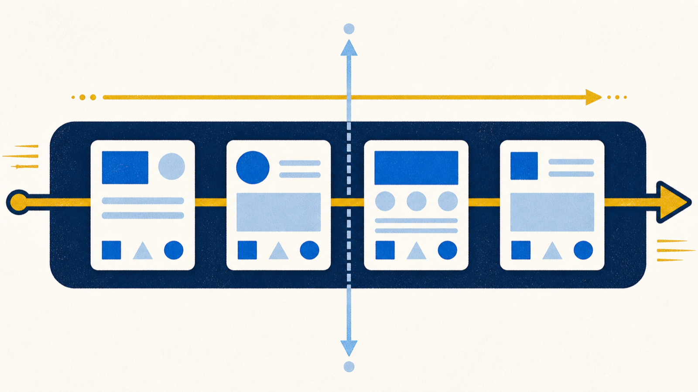
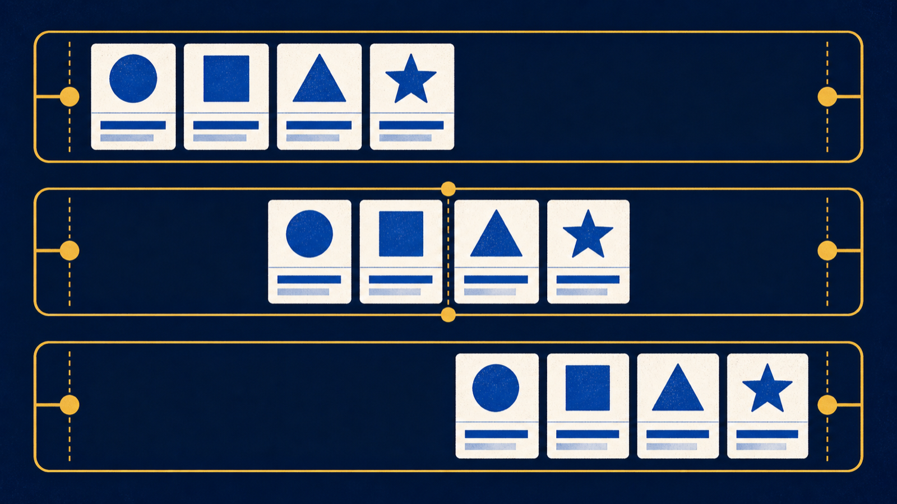
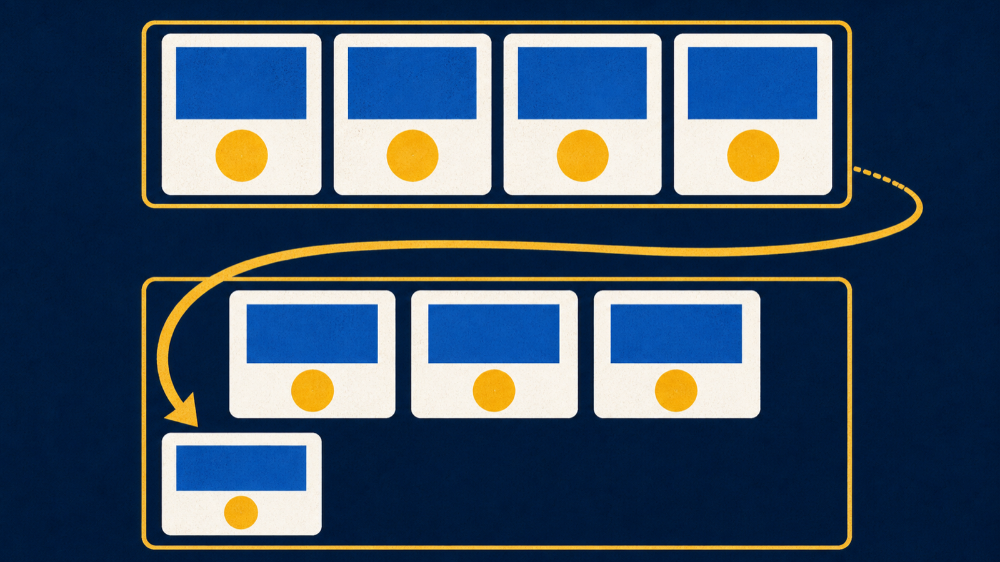
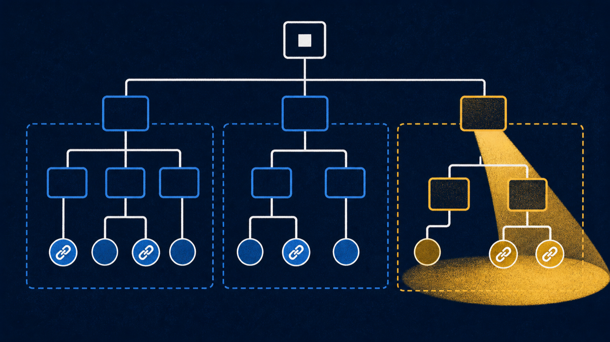
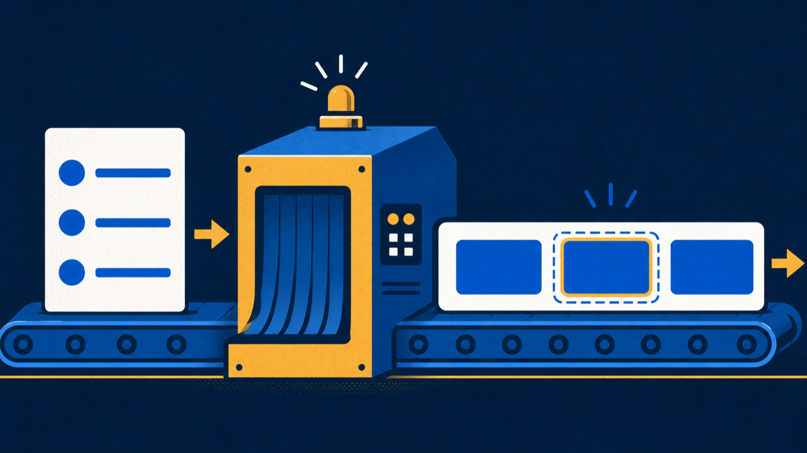

Place, align, gap, and wrap flex items.
Chapter 6 · 55 minutes
Layout with Flexbox
The boxes look right. Why do they still stack?
The boxes look right. Why do they still stack?
Place, align, gap, and wrap flex items.
Target descendants and interaction states.
Turn the semantic list into an accessible nav.
.officer-roster {
display: flex;
}
maincontainersectionitemppsectionitemsectionitemPut display: flex on the parent, not each card.
display: flex lands on main. Which elements become items?
section elements become flex items. Their nested paragraphs stay put.
flex-startspace aftercenterspace splitflex-endspace beforejustify-contentMain axisstart · center · end · space-between
align-itemsCross axisstretch · start · center · end
gap: 16px;
margin: 16px;
.announcement-board {
display: flex;
gap: 16px;
flex-wrap: wrap;
}
No wrap? Items shrink. Wrap? The full card drops to a new line.
Would you place gap on the toolbar or margin on each button?
gap: 20px on the toolbar. The container opens space between neighbors without padding the outer edges.
footer a {
color: #fac78d;
}aevery linktoo broad
footer aany link inside footerright scope
footer > adirect-child links onlytoo strict here
More specific scope beats a bare element selector.
nav a:hover,
nav a:focus {
background-color: #268080;
color: #ffffff;
}:hover with :focus.Keep a visible focus outline.:hoverpointer rests:focuskeyboard arrivesoutlinelocation stays visiblenav ul {
list-style: none;
margin: 0;
padding: 0;
display: flex;
gap: 8px;
}nav a {
display: block;
padding: 8px 12px;
text-decoration: none;
}Name the job of display: block, padding, and the hover-focus selector list.

Estimated lab time: 5-6 hours
Exit ticket: A card row must wrap with 16px between cards, and footer links need their own state colors. Write the two scoped rules.
Next: Part III starts with user experience, sitemaps, and wireframes.